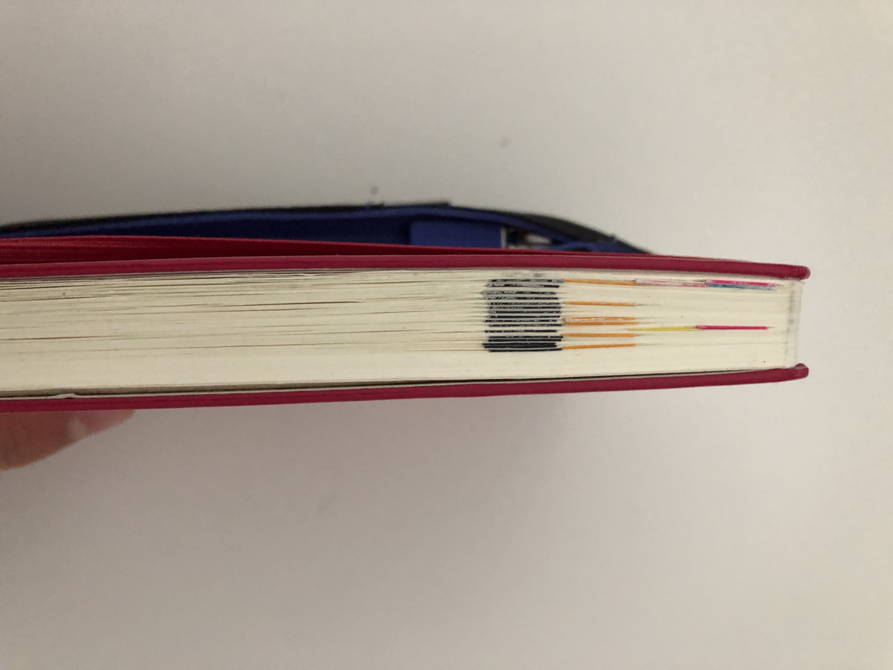

Pen and Paper
A couple of years ago I went from working in an office to working remote mostly from home. A couple of months in I realized how my productivity had dropped significantly. For years everything I had to do and most of the planning around it has lived in Omnifocus. I have even written about it before. For the rest of planning and notes I kept a handful of markdown files in a git repo, held together by Makefiles and a vim plugin. But now it didn’t work for me anymore. I kept opening OmniFocus just to find myself aimlessly clicking and sorting things around. I redid the layout of my perspectives again. Restructured all the GTD contexts and areas of focus. But nothing actually changed. Looking at the app it just blurred with all the other open windows. All the other apps. It became kind of meaningless. I realized with 100% of work and interactions happening on my screen now, everything felt the same to me. I was unable to focus on what I wanted to do. Planning was an app switch away from coding was an app switch away from meetings was an app switch away from my todos. There were many times where I caught myself cycling from one thing to the other a couple of times within minutes. My attention was completely shot. Additionally I had so many Omnifocus integrations set up that were pulling in my JIRA tickets, my assigned code reviews, and even emails I needed to reply to at some point. The longer I wasn’t using Omnifocus the more it got cluttered with things that needed filing. Instead of helping me get organized it did the opposite. I had over engineered Omnifocus having succumbed to the idea that I’d be more productive the more I automate and fine tune it.
Trying something new(-ish)
I needed to change things up. And the solution for this couldn’t be another app. It needed to be different. And it turns out this is a pretty normal thing for humans. We link memories (which things to remember to do basically are) to locations via the hippocampus.
This is the reason it’s important to have a designated place for each of our belongings - the hippocampus does the remembering for us if we associate an object with a particular spatial location.
— Daniel Levitin, The Organized Mind (p. 91)
I’ve been carrying a Moleskine notebook with me since early 2008. Early on I had already used it as a todo organizer before switching to Things and eventually Omnifocus. I’ve used it on and off for random things (rarely enough for it to last 10 years). And it’s been the testing ground every time I wanted to get back to taking more analog notes. I’ve also backed the Spark Notebook on Kickstarter and used that with a lot of success for a while. So when I was looking to change things up from my digital routine I remembered having read about the Bullet Journal method and decided to give it a try.
Getting started with a Bullet Journal
For getting set up I started reading the website first and watched the canonical intro video linked from there. But being used to this elaborate GTD setup I wasn’t convinced that a minimalist way worked for me. I read a lot of fairly popular posts on getting started with bullet journaling from websites like this and this one and a ton of other blog posts to understand how this is being used by different people. And then I bought a new notebook and some pens and started with my own.
And I absolutely overdid it. I used a ton of color and differently sized pens to denote headlines, priorities, etc. I had 2 different systems (dot stickers and sticky labels) do denote important pages. And I added a ton of modules and collections like trackers for workout, meditation, water intake, and reading time. I had very elaborate monthly and weekly spreads, trying to recreate the organizational cockpit that I always wanted Omnifocus to be. I put way too many things to do in, areas of focus with color coded headings, and complicated time blocking details. My daily spread had a daily plan bar that included all my meetings and time blocks for the day. My weekly spreads were as complicated and stuffed, at some point even including which days to take out the trash. Bringing me to up to an hour of just setting up my page to get started for the day. All to combat the feeling of not getting things done and falling of the wagon again.
Of course once the initial excitement had worn off I fell back into seeing maintaining this complicated thing as a chore and neglected it. And I ran into the same problem I had with Omnifocus of having a layout that was very tuned to my workdays. On the weekend or when I was taking vacation, it wasn’t useful. And I hardly interacted with the journal. Leaving me again with the guilt of “having fallen off”. One important difference though was that on those weekend days and during time off where I couldn’t bother to get into my complicated setups, when I did use the journal it resembled a lot more the original idea of the Bullet Journal. And instead of giving up and changing back to Omnifocus, I stuck with it.
What my Bullet Journal actually looks like now
One of those vacations was at the end of last year. During that time I reduced my usage of the journal to basically only a weekly spread. Mostly because there wasn’t much to keep track of. And I realized it still worked for me. I still put all my todos and appointments in there. And it adapted to the difference in usage wonderfully. I was also about to start my third Bullet Journal, having journaled more than twice as much as the previous 10 years combined. I bought the official Bullet Journal book to learn more about the ideas and philosophies behind the original approach given I had more belief it could work for me. And aside from all the other interesting things in the book, the thing that really changed the way I thought about it was that it’s still supposed to be more like a journal than a GTD system.
After finishing the book I slimmed down my Bullet Journal to the useful bare essentials. I kept the original monthly layout I had already been using but stripped down the monthly task list to a literal list instead of different areas with colored headlines. The 2 page weekly spread turned into a single page of tasks I want to get done over the course of the week. And the daily spread is no longer a plan bar for a meticulously planned out day. It now just starts with the date headline and serves 90% as a journal for recording the day rather than a pre-planned skeleton of how I think the day will go. Because one of the big reasons why I was often abandoning the journal was because they day almost never turned out as planned. Making me feel like the journal was less useful.
I kept marking the future log (which for me is the combined calendex/alistair method), monthly and weekly spreads, as well as important collections with dot stickers. That way I can quickly find e.g. the page with the last monthly spread if I want to look something up.

And another big insight from the book was that I’m now leaning on migrations a lot more than I used to even though I don’t do daily migrations anymore. I scan the last pages for the current week in the morning for things that still need to get done and if they are a priority I move them to the current day. However that rarely happens and it mostly a measure for me to not forget about priorities. I do weekly and monthly migrations where I thoroughly go through the pages and migrate items, add additional context, put things into the future log (or the topic specific collections for things like personal, work, apartment, etc that serve as a sort of backlog). But otherwise I really just start a new headline every morning and start journaling.
In Closing
Switching to paper for organizing my todos, thoughts, events, and planning things has been absolutely wonderful for my stress levels and mental health. Especially after trimming the process down to the minimum. I’m no longer stressing about the perfect setup, but use the journal in the way that makes the most sense for me in the moment. I still use a reminders list on my phone for things on the go or when I don’t have the journal with me to migrate over later. I’m much more focused and calm about organizing things when I’m able to close my laptop and just open the journal, it feels much less noisy. Using pen and paper so much every day also lead me to occasionally doodle on pages and discover my interest in drawing and art which has been another huge source of joy for me.